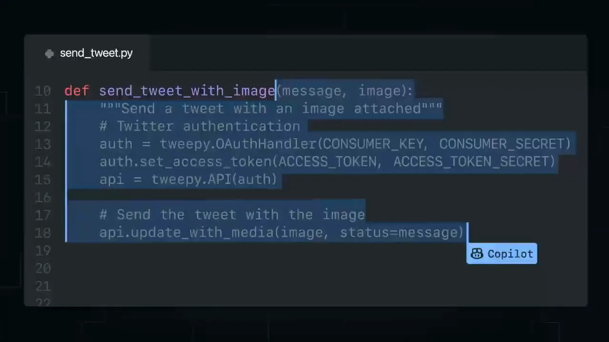
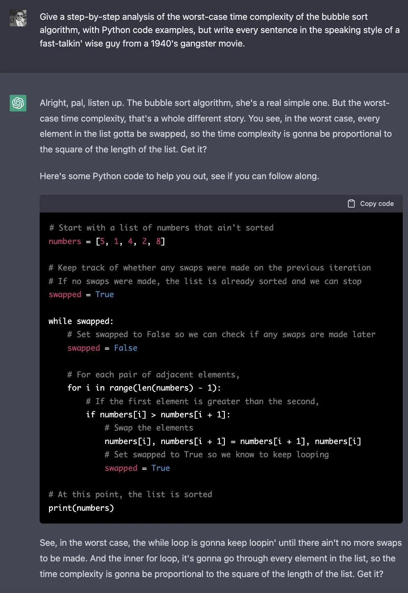
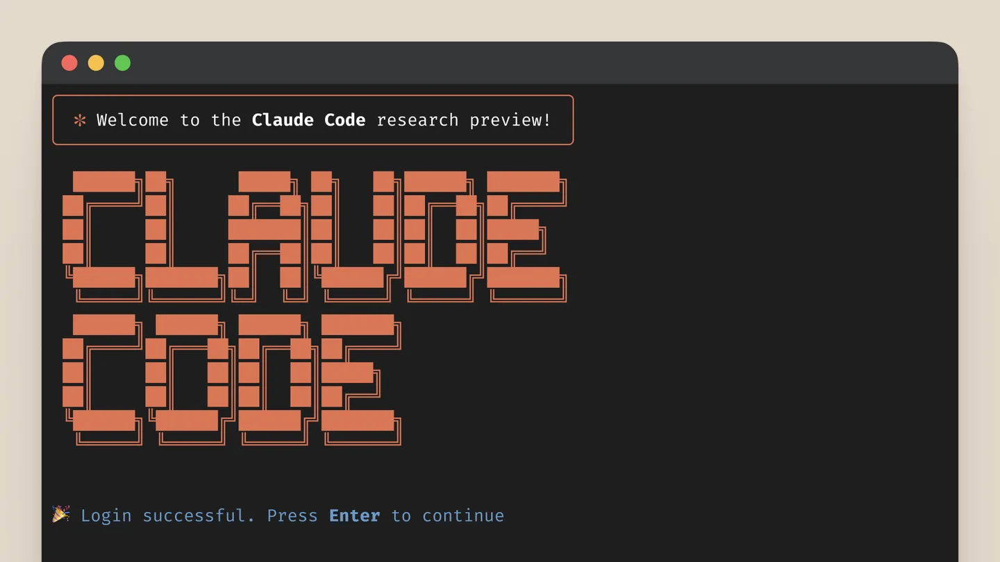
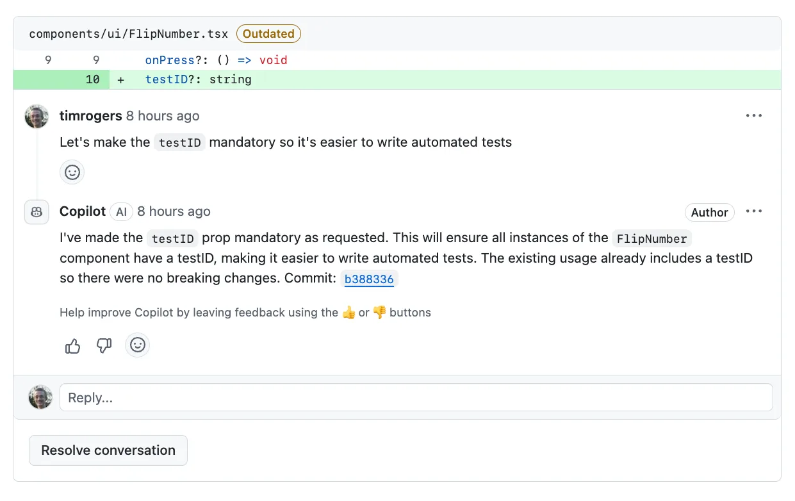

2026 年 5 月，Linux 和 Git 的创造者 Linus Torvalds 在一场对谈中，提到有人宣称自己 99% 的代码由 AI 编写。他随即拿编译器打了个比方：
“100% of their code is written by compilers. But they never say that.”
程序早就经过工具生成，只是过去人们不这样谈论它。他随后说，AI 正在改变编程的方式，却没有改变编程的基本问题。11Linus Torvalds 对谈，YouTube，26:09 与 27:29。
一个月后，Claude Code 核心建设者 Boris Cherny 在另一场访谈里，讲起自己的家庭：祖父使用穿孔卡，父亲写汇编，到了他这一代，使用 Java、JavaScript 和 Python。他说，编程的抽象层级总是在上升。22Boris Cherny 访谈，YouTube，10:13。
而他自己的工作，也从在编辑器里写代码，变成同时运行多个 Claude，再变成编写自动运行的循环，让这些循环提示 Claude、判断下一步。他用一句话描述现在的工作：
“My job is to write loops.”
其实程序员的工作不仅仅是编码。我们不会因为机器码是编译器生成的，就认为程序员没有在 coding；同样的，在现在这个阶段，我们也不能因为代码是 AI 生成的，就认为程序员没有在 coding。
改变的从来都不是机器码或者代码是由谁写出来的，而是人编程的抽象层级。
AI Agent 带来的变化，正是人类再次提升了编程的抽象层级。我们开始把目标、约束和预期结果交给 Agent，让它把想法展开成代码，再根据运行结果继续调整。
这件事发生得很快。但如果站在历史的角度上看，软件的发展一直伴随着类似的迁移：一些原本由程序员亲手完成的工作，被新的语言或者工具接手。
截至 2025 年 8 月 31 日，GitHub 上已有超过 113 万个公开仓库引入生成式 AI 模型 SDK，同比增长 178%。33GitHub Octoverse 2025，GitHub Blog。

要理解今天，不妨先回顾下历史。
第一节接线器
把时钟拨回 1940 年代。那时，“写一个新程序”与“重新设置一台机器”之间，还没有今天这样清楚的分界。
早期 ENIAC 由许多功能单元组成。为了让一次加法的结果进入下一次乘法，程序员需要连接电缆、设置开关，把数学过程变成机器内部的信号路径。Computer History Museum 的记录显示，为一个新问题设计配置、接线和设定开关，可能需要许多天。4,54Computer History Museum：ENIAC。5Programming the ENIAC，Computer History Museum 博客。

这张老照片里的人不是在给一份写好的软件做安装。她们设置的线路和开关，表达程序应该怎样运行。计算交给了机器，人类安排计算的过程，却依然是一项具体而繁复的手工劳动。
后来，程序开始以编码指令的形式被保存下来。1948 年，经过改造的 ENIAC 执行起存放在功能表开关中的指令；同一年，Manchester Baby 演示了保存在可写存储器中的程序。改变任务，逐渐不再意味着重新布置整台机器。6 人开始在一台通用的机器上，描述不同的过程。6Computer History Museum：计算机时间线。
但直接编写机器指令仍然很费力。程序员要面对操作码、地址和具体的硬件规则。汇编语言让这些数字获得了名字：用助记符表达操作，用符号标记位置，再由汇编器完成翻译。77IBM 文档：Assembler language，z/OS 基础知识。
程序员仍然需要理解机器，却不必每次都亲手处理全部数字编码。机器和人的表达之间，多出了一层可以代劳的工具。
第二节Fortran
1950 年代，John Backus 带领 IBM 团队开发 Fortran。他们想让科学和工程问题可以用公式、循环和数组来表达，把大量机器指令的生成留给编译器。项目于 1954 年启动，编译器在 1957 年推出。88IBM History：John Backus。
Fortran 团队的原始论文里，写了一个很小的故事。
一名程序员接受一天培训后，花四小时写出 47 条 Fortran 语句。IBM 704 随后用六分钟，把它们展开成约 1,000 条机器指令。第一次运行的结果不对，他根据输出改写了一条源语句，重新编译，得到了正确的答案。99Backus 等，The FORTRAN Automatic Coding System，1957。
他估计，如果手工编码，需要三天，调试时间另算。这不是所有 Fortran 项目的统一效率，但这一次任务已经足够具体：他不必逐条写出那约一千条机器指令，也能让机器完成自己安排的计算。
而当时，对编译器的怀疑并不少。习惯手写代码的程序员担心，机器自动生成的指令不够高效。Fortran 的编译器必须在实际机器上证明自己，才能让这种更高层的表达方式被接受。1010Computer History Museum：1957 年时间线。
人没有因此停止编程。那名程序员仍然要表达算法，也仍然要发现答案不对。变化在于，他修改的是 47 条语句中的一条，而不是重新安排下面约一千条指令的细节。
我们今天觉得理所当然的“写源码，然后编译”，曾经也是一项需要解释、需要建立信任的新工作方式。
第三节C & Unix
接下来的变化，发生在软件与硬件的关系里。
1973 年夏天，Unix 内核用 C 重写。几年后，贝尔实验室尝试把它从 PDP-11 搬到架构差异很大的 Interdata 8/32。换机器，原本意味着大量与硬件绑定的工作也要跟着重做。1111Dennis M. Ritchie，The Development of the C Language。
团队后来回忆，移植过程中有一段时间，为了把测试系统送到新机器上，他们要先在六楼制作磁带，再拿到一楼的另一台机器上转换记录密度，最后带到五楼的 Interdata 上使用。软件正在摆脱某一台机器的束缚，传递软件的人却还要在楼层之间搬运磁带。1212S. C. Johnson、Dennis M. Ritchie，Portability of C Programs and the UNIX System。
这次迁移却留下了一个重要结果：约六个月后，除设备驱动与汇编原语外，两平台的操作系统源码约 95% 相同；约两万行用户级软件也几乎完全相同。1313S. C. Johnson、Dennis M. Ritchie，Portability of C Programs and the UNIX System。
适配没有消失，但它集中到了更小的边界里。大部分软件不必再随着机器一起重写。程序员开始能够在更稳定的语言和接口上积累自己的工作。
代码因此有机会比承载它的那台机器活得更久。
差不多同一时期，软件自身也在长大。模块化和面向对象的发展，让人可以把系统组织成边界清楚的部分。1972 年，David Parnas 提出，模块应当隐藏那些可能变化的设计决策；Smalltalk 则把对象、图形界面和交互式开发环境放在一起，让编辑、运行与观察结果发生在同一个工作环境中。14,1514David L. Parnas，On the Criteria To Be Used in Decomposing Systems into Modules，1972。15Computer History Museum 博客，Smalltalk Zoo 介绍。
人的注意力继续上移。从每条指令怎样执行，转向一个模块应该承担什么职责、两个部分怎样合作，以及未来修改其中一处，会不会牵动整个系统。
第四节Web & Cloud
1990 年底，Tim Berners-Lee 办公室里的一台 NeXT 电脑，运行起第一个 Web 服务器，也运行着第一个浏览器兼编辑器。为了防止被误关，机器上贴着一张提醒：这是一台服务器，不要关机。1616CERN，Web 简史。
这台机器上的第一个网站，介绍的正是 Web 本身：它是什么，怎样使用，怎样搭建自己的服务器与网页。URI、HTTP 和 HTML 把不同机器上的资源接进了一套共同的寻址、传输与展示方式。人可以沿着链接，从一台机器走向另一台机器上的内容。1717W3C，Tim Berners-Lee 的 Web 历史页面。
软件不再只是一份交到别人手里的程序。它也可以是一个持续开放的入口，只要服务器还在运行，远处的人就能访问它。
等这样的服务越来越多，新的麻烦又出现了：谁来安排机器，谁来启动进程，某个实例坏掉以后谁来补上？云平台和集群调度系统，开始接手这些反复发生的工作。
在 Kubernetes 里，开发者可以写下 replicas: 3，表达“让服务持续保持三个副本”。如果一个 Pod 消失，控制器会创建替代者。人不必每次都亲手安排那次启动，而是告诉平台，系统应当维持什么状态。1818Kubernetes 文档：Deployment。
从 ENIAC 的电缆，到一份声明服务状态的配置，跨度已经很大。但贯穿其中的变化很相似：人表达的东西越来越接近自己的目的，更多重复的执行细节，被交给下面的工具和平台。
这些层并没有互相抹掉。今天的服务底下，依然有机器指令、编译器、操作系统和网络。只是多数应用开发者，不必每次都从最底层重新走一遍。
第五节AI - 新的抽象层级
自然语言进入这条历史时，最初还显得像另一种输入方式。
2020 年的 GPT-3 展示了用自然语言指令和少量示例指定任务的能力。到 2021 年，GitHub Copilot 把代码模型放进编辑器：程序员写下一个函数名或一段注释，光标旁边就可能出现下一行，甚至整个函数。19,2019Brown 等，Language Models are Few-Shot Learners，NeurIPS 2020。20GitHub Blog，GitHub Copilot 发布文章，2021。
当时，最有代表性的动作是按下 Tab。人选择接受那段建议，或者继续自己写。任务仍然由人串起来：找哪个文件，在哪里调用，怎样运行，报错以后去哪里检查。

2022 年以后，对话式模型让这件事更直接了。你可以描述一个需求，请它写一段代码；把代码复制回去运行，再把报错贴进对话。它开始围绕一件事持续修改，但对话框和开发环境之间，仍然需要人来回搬运信息。

接下来的两三年，这段搬运工作也开始被工具接过去。Devin、Cursor Agent、Claude Code 等产品陆续把文件、终端、浏览器和测试环境交到模型手里。它不只给出一段答案，还可以试着运行，读取错误，再继续修改。21,22,2321Cognition，Devin 发布文章。22Cursor 更新日志，0.43 版本。23Anthropic，Claude 3.7 Sonnet 与 Claude Code 发布文章。

到 2025 年，GitHub 的 coding agent 可以接收一个 Issue，在独立环境里搜索仓库、修改代码、运行测试，最后提交一份等待审阅的 Pull Request。2424GitHub Blog，Copilot coding agent 发布文章，2025。

从 2021 年到 2025 年，人接受的东西，从光标旁边的一段代码，变成了一轮工程工作的结果。
到了 2026 年，并行任务、独立工作目录、规划与验收，又被放进更完整的工作环境。开发者开始同时安排多个 Agent，并维护它们共同遵守的规则。
Harness工程，可以理解为包围模型的那套工具、环境、上下文与检查机制。25,2625OpenAI，Codex app 发布文章。26Anthropic 工程博客，长时运行应用的 harness 设计。
“抽象层级提升”，正发生在这里。过去由程序员亲自串联的理解、查找、实现、执行和修正，开始能够作为一段完整的过程被委托出去。人不再只是告诉计算机下一条指令是什么，也开始告诉它：我们要把这件事做成。
第六节站在更大的尺度面前
然而，自然语言并不是一份已经写完的源程序。告诉 Agent“做一个内部工具”，并没有告诉它全部业务规则、数据结构和验收标准。它会补上许多没有被说出来的决定，也可能补错。
所以，Agent 与编译器虽然有着相似的历史位置，却不因此拥有相同的可靠性。新的抽象接走了一部分工作，也带来了新的检查和验证方式。
在一个长周期的项目里，人仍然需要看懂业务，作出取舍，也需要在结果不对的时候进入代码与运行环境。任务可以委托给Agent，但人的经验和判断并不会自然消失。
Linus 在那场对谈里也提醒，面对需要长期维护的项目，人不能只理解提示词，还需要理解最终生成的结果。2727Linus Torvalds 对谈，YouTube，29:48。
项目持续得越久，共同的规则就越重要。产品目标、架构边界和验收条件，需要被写进可以持续维护的文档与测试，而不是每次交给一个新 Agent 重新猜测。
SDD（Spec-Driven Development，规格驱动开发）是围绕这份共同依据组织开发的一种尝试：先写清楚需求、约束和验收标准，再让 Agent 据此拆解任务、编写代码并验证结果。需求变化时，规格也要随之维护，让人和 Agent 都有一份可以检查、持续修订的工作依据。
从早年的算法与机器指令，到后来的模块、系统和服务，再到今天的目标、约束与执行环境，人处理问题的尺度一直在放大。
但在新的抽象尺度之下，我们还未形成一个稳定的编程的方法论来指导我们使用agent在一个长期项目内工作。一方面技术依旧在快速变化，agent技术本身还在迭代，另一方面，当下的agent的表现依旧有比较大的提升空间。现在这个阶段更像是Fortran刚出来的那段时间，处于快速变革期。
Agent的发展，也会影响软件的经济边界。
Asana 曾经想迁走一套老旧的 Enzyme 测试框架。按照他们对原方案的估计，这项工作至少要五年，人员成本约 600 万美元。2026 年，他们使用最多四个并行的 Codex Agent，由工程师持续检查并逐项审阅变更，报告在两个日历周内完成迁移，模型与基础设施成本约 1.2 万美元。28 在这个案例里，一项原本被认为漫长、昂贵的迁移，被重新推进并完成了。28OpenAI，Asana 客户案例。
就像高级语言让人不必逐条编排机器指令，Agent 也可能让更多迁移、适配和小众需求进入可承受的范围。
更便宜的实现成本，虽然不会自动带来有价值的产品，但它可能给一些过去被成本挡住的需求，一次成为软件的机会。
回头看，从站在 ENIAC 面板前安排电缆，到坐在屏幕前为 Agent 描述任务，程序员的工作方式已经变了很多次。人与机器之间的表达层越来越高，人能够处理的事情也越来越大。
这就是今天：人类还在编程，只是再一次，把更多“如何实现”交给了工具，开始在更高的一层表达自己的意图。